Adventures of Huckleberry Finn
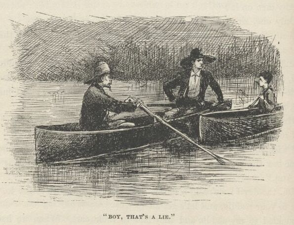
"I will, sir, I will, honest—but don't leave us, please. It's the—the—Gentlemen,
if you'll only pull ahead, and let me heave you the headline, you won't have to come
a-near the raft—please do."
"Set her back, John, set her back!" says one. They backed water. "Keep away, boy—keep
to looard. Confound it, I just expect the wind has blowed it to us. Your pap's got
the small-pox, and you know it precious well. Why didn't you come out and say so?
Do you want to spread it all over?"
"Well," says I, a-blubbering, "I've told everybody before, and they just went away
and left us."
"Poor devil, there's something in that. We are right down sorry for you, but we—well,
hang it, we don't want the small-pox, you see. Look here, I'll tell you what to do.
Don't you try to land by yourself, or you'll smash everything to pieces. You float
along down about twenty miles, and you'll come to a town on the left-hand side of
the river. It will be long after sun-up then, and when you ask for help you tell
them your folks are all down with chills and fever. Don't be a fool again, and let
people guess what is the matter. Now we're trying to do you a kindness; so you just
put twenty miles between us, that's a good boy. It wouldn't do any good to land yonder
where the light is—it's only a wood-yard. Say, I reckon your father's poor, and I'm
bound to say he's in pretty hard luck. Here, I'll put a twenty-dollar gold piece
on this board, and you get it when it floats by. I feel mighty mean to leave you;
but my kingdom! it won't do to fool with small-pox, don't you see?"
"Hold on, Parker," says the other man, "here's a twenty to put on the board for me.
Good-bye, boy; you do as Mr. Parker told you, and you'll be all right."
"That's so, my boy—good-bye, good-bye. If you see any runaway niggers you get help
and nab them, and you can make some money by it."
"Good-bye, sir," says I; "I won't let no runaway niggers get by me if I can help it."
They went off and I got aboard the raft, feeling bad and low, because I knowed very
well I had done wrong, and I see it warn't no use for me to try to learn to do right;
a body that don't get started right when he's little ain't got no show—when the pinch comes there ain't nothing
to back him up and keep him to his work, and so he gets beat. Then I thought a minute,
and says to myself, hold on; s'pose you'd a done right and give Jim up, would you
felt better than what you do now? No, says I, I'd feel bad—I'd feel just the same
way I do now. Well, then, says I, what's the use you learning to do right when it's
troublesome to do right and ain't no trouble to do wrong, and the wages is just the
same? I was stuck. I couldn't answer that. So I reckoned I wouldn't bother no more
about it, but after this always do whichever come handiest at the time.
I went into the wigwam; Jim warn't there. I looked all around; he warn't anywhere.
I says:
"Jim!"
"Here I is, Huck. Is dey out o' sight yit? Don't talk loud."
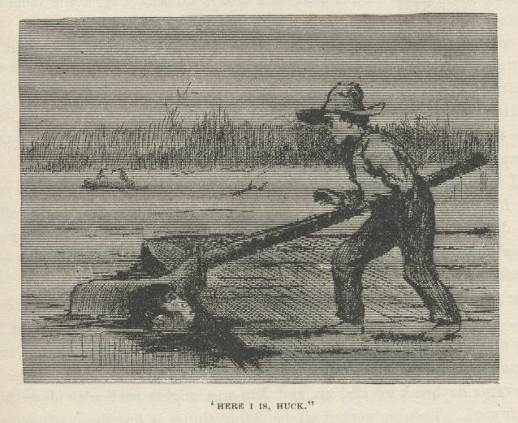
He was in the river under the stern oar, with just his nose out. I told him they
were out of sight, so he come aboard. He says:
"I was a-listenin' to all de talk, en I slips into de river en was gwyne to shove
for sho' if dey come aboard. Den I was gwyne to swim to de raf' agin when dey was
gone. But lawsy, how you did fool 'em, Huck! Dat wuz de smartes' dodge! I tell you, chile, I'spec it save' ole Jim—ole Jim ain't going
to forgit you for dat, honey."
Then we talked about the money. It was a pretty good raise—twenty dollars apiece.
Jim said we could take deck passage on a steamboat now, and the money would last
us as far as we wanted to go in the free States. He said twenty mile more warn't far
for the raft to go, but he wished we was already there.
Towards daybreak we tied up, and Jim was mighty particular about hiding the raft good.
Then he worked all day fixing things in bundles, and getting all ready to quit rafting.
That night about ten we hove in sight of the lights of a town away down in a left-hand
bend.
I went off in the canoe to ask about it. Pretty soon I found a man out in the river
with a skiff, setting a trot-line. I ranged up and says:
"Mister, is that town Cairo?"
"Cairo? no. You must be a blame' fool."
"What town is it, mister?"
"If you want to know, go and find out. If you stay here botherin' around me for about
a half a minute longer you'll get something you won't want."
I paddled to the raft. Jim was awful disappointed, but I said never mind, Cairo would
be the next place, I reckoned.
We passed another town before daylight, and I was going out again; but it was high
ground, so I didn't go. No high ground about Cairo, Jim said. I had forgot it. We
laid up for the day on a towhead tolerable close to the left-hand bank. I begun to
suspicion something. So did Jim. I says:
"Maybe we went by Cairo in the fog that night."
He says:
"Doan' le's talk about it, Huck. Po' niggers can't have no luck. I awluz 'spected
dat rattlesnake-skin warn't done wid its work."
"I wish I'd never seen that snake-skin, Jim—I do wish I'd never laid eyes on it."
"It ain't yo' fault, Huck; you didn' know. Don't you blame yo'self 'bout it."
When it was daylight, here was the clear Ohio water inshore, sure enough, and outside
was the old regular Muddy! So it was all up with Cairo.
We talked it all over. It wouldn't do to take to the shore; we couldn't take the
raft up the stream, of course. There warn't no way but to wait for dark, and start
back in the canoe and take the chances. So we slept all day amongst the cottonwood
thicket, so as to be fresh for the work, and when we went back to the raft about dark
the canoe was gone!
We didn't say a word for a good while. There warn't anything to say. We both knowed
well enough it was some more work of the rattlesnake-skin; so what was the use to
talk about it? It would only look like we was finding fault, and that would be bound
to fetch more bad luck—and keep on fetching it, too, till we knowed enough to keep
still.
By and by we talked about what we better do, and found there warn't no way but just
to go along down with the raft till we got a chance to buy a canoe to go back in.
We warn't going to borrow it when there warn't anybody around, the way pap would
do, for that might set people after us.
So we shoved out after dark on the raft.
Anybody that don't believe yet that it's foolishness to handle a snake-skin, after
all that that snake-skin done for us, will believe it now if they read on and see
what more it done for us.
The place to buy canoes is off of rafts laying up at shore. But we didn't see no
rafts laying up; so we went along during three hours and more. Well, the night got
gray and ruther thick, which is the next meanest thing to fog. You can't tell the
shape of the river, and you can't see no distance. It got to be very late and still,
and then along comes a steamboat up the river. We lit the lantern, and judged she
would see it. Up-stream boats didn't generly come close to us; they go out and follow
the bars and hunt for easy water under the reefs; but nights like this they bull right
up the channel against the whole river.
We could hear her pounding along, but we didn't see her good till she was close. She
aimed right for us. Often they do that and try to see how close they can come without
touching; sometimes the wheel bites off a sweep, and then the pilot sticks his head
out and laughs, and thinks he's mighty smart. Well, here she comes, and we said she
was going to try and shave us; but she didn't seem to be sheering off a bit. She
was a big one, and she was coming in a hurry, too, looking like a black cloud with
rows of glow-worms around it; but all of a sudden she bulged out, big and scary, with
a long row of wide-open furnace doors shining like red-hot teeth, and her monstrous
bows and guards hanging right over us. There was a yell at us, and a jingling of
bells to stop the engines, a powwow of cussing, and whistling of steam—and as Jim
went overboard on one side and I on the other, she come smashing straight through
the raft.
I dived—and I aimed to find the bottom, too, for a thirty-foot wheel had got to go
over me, and I wanted it to have plenty of room. I could always stay under water
a minute; this time I reckon I stayed under a minute and a half. Then I bounced for
the top in a hurry, for I was nearly busting. I popped out to my armpits and blowed
the water out of my nose, and puffed a bit. Of course there was a booming current;
and of course that boat started her engines again ten seconds after she stopped them,
for they never cared much for raftsmen; so now she was churning along up the river,
out of sight in the thick weather, though I could hear her.
I sung out for Jim about a dozen times, but I didn't get any answer; so I grabbed
a plank that touched me while I was "treading water," and struck out for shore, shoving
it ahead of me. But I made out to see that the drift of the current was towards the
left-hand shore, which meant that I was in a crossing; so I changed off and went that
way.
It was one of these long, slanting, two-mile crossings; so I was a good long time
in getting over. I made a safe landing, and clumb up the bank. I couldn't see but
a little ways, but I went poking along over rough ground for a quarter of a mile or
more, and then I run across a big old-fashioned double log-house before I noticed
it. I was going to rush by and get away, but a lot of dogs jumped out and went to
howling and barking at me, and I knowed better than to move another peg.
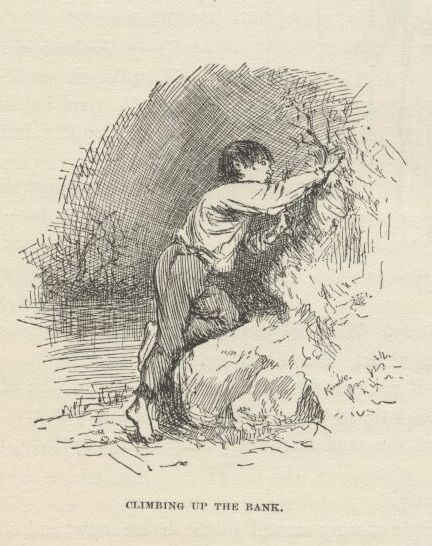
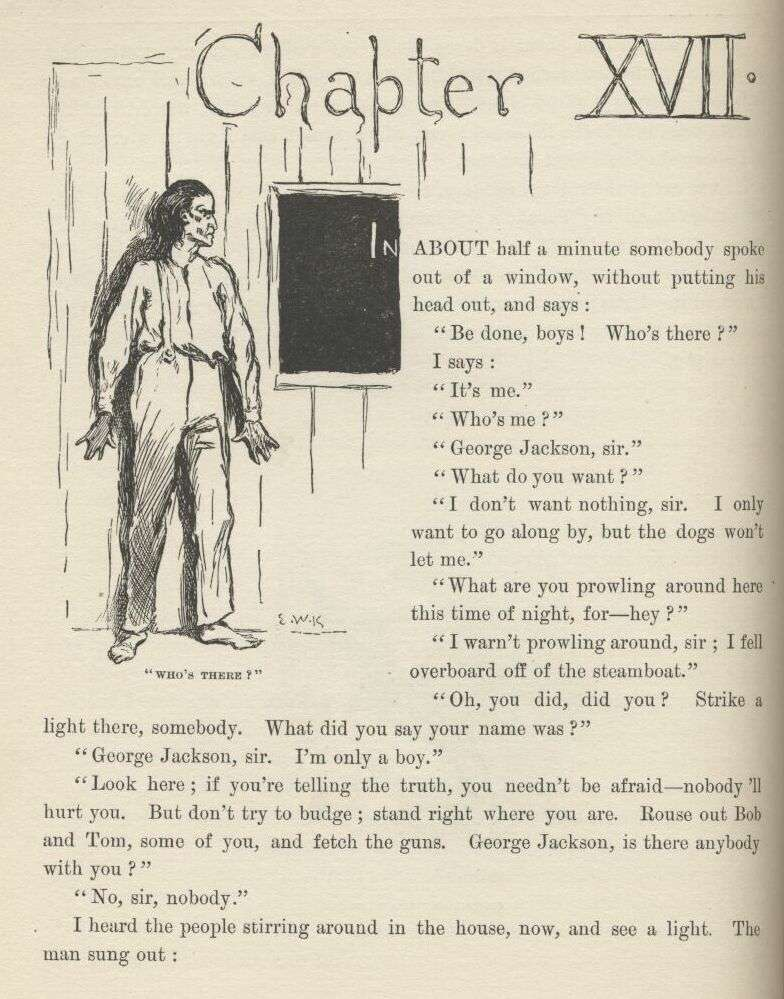
CHAPTER XVII.
IN about a minute somebody spoke out of a window without putting his head out, and
says:
"Be done, boys! Who's there?"
I says:
"It's me."
"Who's me?"
"George Jackson, sir."
"What do you want?"
"I don't want nothing, sir. I only want to go along by, but the dogs won't let me."
"What are you prowling around here this time of night for—hey?"
"I warn't prowling around, sir, I fell overboard off of the steamboat."
"Oh, you did, did you? Strike a light there, somebody. What did you say your name
was?"
"George Jackson, sir. I'm only a boy."
"Look here, if you're telling the truth you needn't be afraid—nobody'll hurt you.
But don't try to budge; stand right where you are. Rouse out Bob and Tom, some of
you, and fetch the guns. George Jackson, is there anybody with you?"
"No, sir, nobody."
I heard the people stirring around in the house now, and see a light. The man sung
out:
"Snatch that light away, Betsy, you old fool—ain't you got any sense? Put it on the
floor behind the front door. Bob, if you and Tom are ready, take your places."
"All ready."
"Now, George Jackson, do you know the Shepherdsons?"
"No, sir; I never heard of them."
"Well, that may be so, and it mayn't. Now, all ready. Step forward, George Jackson.
And mind, don't you hurry—come mighty slow. If there's anybody with you, let him
keep back—if he shows himself he'll be shot. Come along now. Come slow; push the
door open yourself—just enough to squeeze in, d' you hear?"
I didn't hurry; I couldn't if I'd a wanted to. I took one slow step at a time and
there warn't a sound, only I thought I could hear my heart. The dogs were as still
as the humans, but they followed a little behind me. When I got to the three log doorsteps
I heard them unlocking and unbarring and unbolting. I put my hand on the door and
pushed it a little and a little more till somebody said, "There, that's enough—put
your head in." I done it, but I judged they would take it off.
The candle was on the floor, and there they all was, looking at me, and me at them,
for about a quarter of a minute: Three big men with guns pointed at me, which made
me wince, I tell you; the oldest, gray and about sixty, the other two thirty or more—all
of them fine and handsome—and the sweetest old gray-headed lady, and back of her two
young women which I couldn't see right well. The old gentleman says:
"There; I reckon it's all right. Come in."
As soon as I was in the old gentleman he locked the door and barred it and bolted
it, and told the young men to come in with their guns, and they all went in a big
parlor that had a new rag carpet on the floor, and got together in a corner that was
out of the range of the front windows—there warn't none on the side. They held the
candle, and took a good look at me, and all said, "Why, he ain't a Shepherdson—no, there ain't any Shepherdson about him." Then the old man
said he hoped I wouldn't mind being searched for arms, because he didn't mean no harm
by it—it was only to make sure. So he didn't pry into my pockets, but only felt outside
with his hands, and said it was all right. He told me to make myself easy and at
home, and tell all about myself; but the old lady says:
"Why, bless you, Saul, the poor thing's as wet as he can be; and don't you reckon
it may be he's hungry?"
"True for you, Rachel—I forgot."
So the old lady says:
"Betsy" (this was a nigger woman), "you fly around and get him something to eat as
quick as you can, poor thing; and one of you girls go and wake up Buck and tell him—oh,
here he is himself. Buck, take this little stranger and get the wet clothes off from
him and dress him up in some of yours that's dry."
Buck looked about as old as me—thirteen or fourteen or along there, though he was
a little bigger than me. He hadn't on anything but a shirt, and he was very frowzy-headed.
He came in gaping and digging one fist into his eyes, and he was dragging a gun along
with the other one. He says:
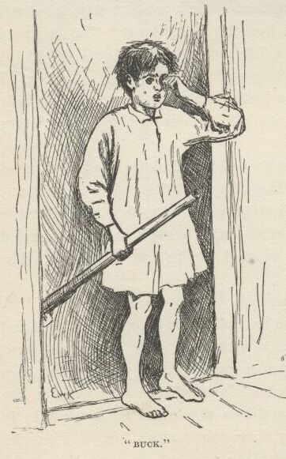
"Ain't they no Shepherdsons around?"
They said, no, 'twas a false alarm.
"Well," he says, "if they'd a ben some, I reckon I'd a got one."
They all laughed, and Bob says:
"Why, Buck, they might have scalped us all, you've been so slow in coming."
"Well, nobody come after me, and it ain't right I'm always kept down; I don't get
no show."
"Never mind, Buck, my boy," says the old man, "you'll have show enough, all in good
time, don't you fret about that. Go 'long with you now, and do as your mother told
you."
When we got up-stairs to his room he got me a coarse shirt and a roundabout and pants
of his, and I put them on. While I was at it he asked me what my name was, but before
I could tell him he started to tell me about a bluejay and a young rabbit he had catched
in the woods day before yesterday, and he asked me where Moses was when the candle
went out. I said I didn't know; I hadn't heard about it before, no way.
"Well, guess," he says.
"How'm I going to guess," says I, "when I never heard tell of it before?"
"But you can guess, can't you? It's just as easy."
"Which candle?" I says.
"Why, any candle," he says.
"I don't know where he was," says I; "where was he?"
"Why, he was in the dark! That's where he was!"
"Well, if you knowed where he was, what did you ask me for?"
"Why, blame it, it's a riddle, don't you see? Say, how long are you going to stay
here? You got to stay always. We can just have booming times—they don't have no
school now. Do you own a dog? I've got a dog—and he'll go in the river and bring
out chips that you throw in. Do you like to comb up Sundays, and all that kind of
foolishness? You bet I don't, but ma she makes me. Confound these ole britches!
I reckon I'd better put 'em on, but I'd ruther not, it's so warm. Are you all ready?
All right. Come along, old hoss."
Cold corn-pone, cold corn-beef, butter and buttermilk—that is what they had for me
down there, and there ain't nothing better that ever I've come across yet. Buck and
his ma and all of them smoked cob pipes, except the nigger woman, which was gone,
and the two young women. They all smoked and talked, and I eat and talked. The young
women had quilts around them, and their hair down their backs. They all asked me
questions, and I told them how pap and me and all the family was living on a little
farm down at the bottom of Arkansaw, and my sister Mary Ann run off and got married
and never was heard of no more, and Bill went to hunt them and he warn't heard of
no more, and Tom and Mort died, and then there warn't nobody but just me and pap left,
and he was just trimmed down to nothing, on account of his troubles; so when he died
I took what there was left, because the farm didn't belong to us, and started up the
river, deck passage, and fell overboard; and that was how I come to be here. So they
said I could have a home there as long as I wanted it. Then it was most daylight
and everybody went to bed, and I went to bed with Buck, and when I waked up in the
morning, drat it all, I had forgot what my name was. So I laid there about an hour
trying to think, and when Buck waked up I says:
"Can you spell, Buck?"
"Yes," he says.
"I bet you can't spell my name," says I.
"I bet you what you dare I can," says he.
"All right," says I, "go ahead."
"G-e-o-r-g-e J-a-x-o-n—there now," he says.
"Well," says I, "you done it, but I didn't think you could. It ain't no slouch of
a name to spell—right off without studying."
I set it down, private, because somebody might want me to spell it next, and so I wanted to be handy with it and rattle it off like I was
used to it.
It was a mighty nice family, and a mighty nice house, too. I hadn't seen no house
out in the country before that was so nice and had so much style. It didn't have
an iron latch on the front door, nor a wooden one with a buckskin string, but a brass
knob to turn, the same as houses in town. There warn't no bed in the parlor, nor a
sign of a bed; but heaps of parlors in towns has beds in them. There was a big fireplace
that was bricked on the bottom, and the bricks was kept clean and red by pouring water
on them and scrubbing them with another brick; sometimes they wash them over with
red water-paint that they call Spanish-brown, same as they do in town. They had big
brass dog-irons that could hold up a saw-log. There was a clock on the middle of the
mantelpiece, with a picture of a town painted on the bottom half of the glass front,
and a round place in the middle of it for the sun, and you could see the pendulum
swinging behind it. It was beautiful to hear that clock tick; and sometimes when
one of these peddlers had been along and scoured her up and got her in good shape,
she would start in and strike a hundred and fifty before she got tuckered out. They
wouldn't took any money for her.
Well, there was a big outlandish parrot on each side of the clock, made out of something
like chalk, and painted up gaudy. By one of the parrots was a cat made of crockery,
and a crockery dog by the other; and when you pressed down on them they squeaked,
but didn't open their mouths nor look different nor interested. They squeaked through
underneath. There was a couple of big wild-turkey-wing fans spread out behind those
things. On the table in the middle of the room was a kind of a lovely crockery basket
that had apples and oranges and peaches and grapes piled up in it, which was much
redder and yellower and prettier than real ones is, but they warn't real because you
could see where pieces had got chipped off and showed the white chalk, or whatever
it was, underneath.
This table had a cover made out of beautiful oilcloth, with a red and blue spread-eagle
painted on it, and a painted border all around. It come all the way from Philadelphia,
they said. There was some books, too, piled up perfectly exact, on each corner of
the table. One was a big family Bible full of pictures. One was Pilgrim's Progress,
about a man that left his family, it didn't say why. I read considerable in it now
and then. The statements was interesting, but tough. Another was Friendship's Offering,
full of beautiful stuff and poetry; but I didn't read the poetry. Another was Henry
Clay's Speeches, and another was Dr. Gunn's Family Medicine, which told you all about
what to do if a body was sick or dead. There was a hymn book, and a lot of other
books. And there was nice split-bottom chairs, and perfectly sound, too—not bagged
down in the middle and busted, like an old basket.
They had pictures hung on the walls—mainly Washingtons and Lafayettes, and battles,
and Highland Marys, and one called "Signing the Declaration." There was some that
they called crayons, which one of the daughters which was dead made her own self when
she was only fifteen years old. They was different from any pictures I ever see before—blacker,
mostly, than is common. One was a woman in a slim black dress, belted small under
the armpits, with bulges like a cabbage in the middle of the sleeves, and a large
black scoop-shovel bonnet with a black veil, and white slim ankles crossed about with
black tape, and very wee black slippers, like a chisel, and she was leaning pensive
on a tombstone on her right elbow, under a weeping willow, and her other hand hanging
down her side holding a white handkerchief and a reticule, and underneath the picture
it said "Shall I Never See Thee More Alas." Another one was a young lady with her
hair all combed up straight to the top of her head, and knotted there in front of
a comb like a chair-back, and she was crying into a handkerchief and had a dead bird
laying on its back in her other hand with its heels up, and underneath the picture
it said "I Shall Never Hear Thy Sweet Chirrup More Alas." There was one where a young
lady was at a window looking up at the moon, and tears running down her cheeks; and
she had an open letter in one hand with black sealing wax showing on one edge of it,
and she was mashing a locket with a chain to it against her mouth, and underneath
the picture it said "And Art Thou Gone Yes Thou Art Gone Alas." These was all nice
pictures, I reckon, but I didn't somehow seem to take to them, because if ever I was
down a little they always give me the fan-tods. Everybody was sorry she died, because
she had laid out a lot more of these pictures to do, and a body could see by what
she had done what they had lost. But I reckoned that with her disposition she was
having a better time in the graveyard. She was at work on what they said was her
greatest picture when she took sick, and every day and every night it was her prayer
to be allowed to live till she got it done, but she never got the chance. It was
a picture of a young woman in a long white gown, standing on the rail of a bridge
all ready to jump off, with her hair all down her back, and looking up to the moon,
with the tears running down her face, and she had two arms folded across her breast,
and two arms stretched out in front, and two more reaching up towards the moon—and
the idea was to see which pair would look best, and then scratch out all the other
arms; but, as I was saying, she died before she got her mind made up, and now they
kept this picture over the head of the bed in her room, and every time her birthday
come they hung flowers on it. Other times it was hid with a little curtain. The
young woman in the picture had a kind of a nice sweet face, but there was so many
arms it made her look too spidery, seemed to me.
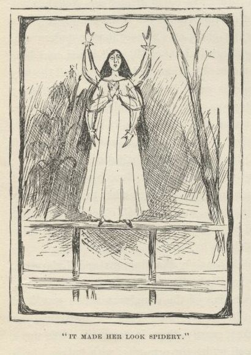
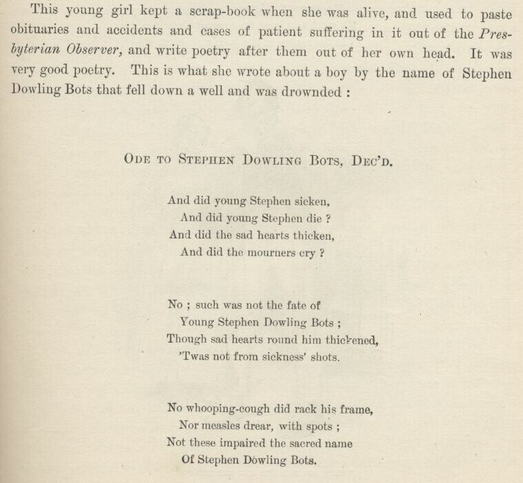
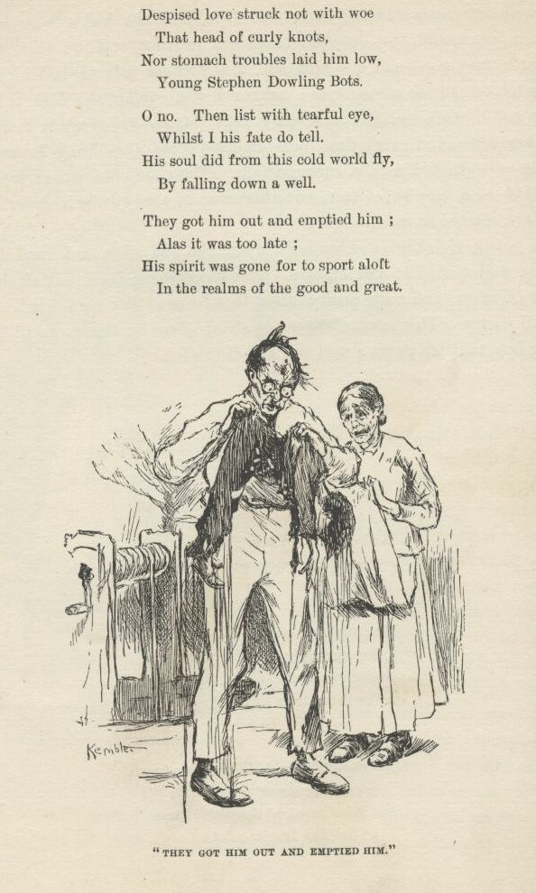
This young girl kept a scrap-book when she was alive, and used to paste obituaries
and accidents and cases of patient suffering in it out of the Presbyterian Observer,
and write poetry after them out of her own head. It was very good poetry. This is
what she wrote about a boy by the name of Stephen Dowling Bots that fell down a well
and was drownded:
ODE TO STEPHEN DOWLING BOTS, DEC'D
And did young Stephen sicken,
And did young Stephen die?
And did the sad hearts thicken,
And did the mourners cry?
No; such was not the fate of
Young Stephen Dowling Bots;
Though sad hearts round him thickened,
'Twas not from sickness' shots.
No whooping-cough did rack his frame,
Nor measles drear with spots;
Not these impaired the sacred name
Of Stephen Dowling Bots.
Despised love struck not with woe
That head of curly knots,
Nor stomach troubles laid him low,
Young Stephen Dowling Bots.
O no. Then list with tearful eye,
Whilst I his fate do tell.
His soul did from this cold world fly
By falling down a well.
They got him out and emptied him;
Alas it was too late;
His spirit was gone for to sport aloft
In the realms of the good and great.
And did young Stephen die?
And did the sad hearts thicken,
And did the mourners cry?
No; such was not the fate of
Young Stephen Dowling Bots;
Though sad hearts round him thickened,
'Twas not from sickness' shots.
No whooping-cough did rack his frame,
Nor measles drear with spots;
Not these impaired the sacred name
Of Stephen Dowling Bots.
Despised love struck not with woe
That head of curly knots,
Nor stomach troubles laid him low,
Young Stephen Dowling Bots.
O no. Then list with tearful eye,
Whilst I his fate do tell.
His soul did from this cold world fly
By falling down a well.
They got him out and emptied him;
Alas it was too late;
His spirit was gone for to sport aloft
In the realms of the good and great.
If Emmeline Grangerford could make poetry like that before she was fourteen, there
ain't no telling what she could a done by and by. Buck said she could rattle off
poetry like nothing. She didn't ever have to stop to think. He said she would slap
down a line, and if she couldn't find anything to rhyme with it would just scratch
it out and slap down another one, and go ahead. She warn't particular; she could write
about anything you choose to give her to write about just so it was sadful. Every
time a man died, or a woman died, or a child died, she would be on hand with her "tribute"
before he was cold. She called them tributes. The neighbors said it was the doctor
first, then Emmeline, then the undertaker—the undertaker never got in ahead of Emmeline
but once, and then she hung fire on a rhyme for the dead person's name, which was
Whistler. She warn't ever the same after that; she never complained, but she kinder
pined away and did not live long. Poor thing, many's the time I made myself go up
to the little room that used to be hers and get out her poor old scrap-book and read
in it when her pictures had been aggravating me and I had soured on her a little.
I liked all that family, dead ones and all, and warn't going to let anything come
between us. Poor Emmeline made poetry about all the dead people when she was alive,
and it didn't seem right that there warn't nobody to make some about her now she was
gone; so I tried to sweat out a verse or two myself, but I couldn't seem to make it
go somehow. They kept Emmeline's room trim and nice, and all the things fixed in
it just the way she liked to have them when she was alive, and nobody ever slept there.
The old lady took care of the room herself, though there was plenty of niggers, and
she sewed there a good deal and read her Bible there mostly.
Well, as I was saying about the parlor, there was beautiful curtains on the windows:
white, with pictures painted on them of castles with vines all down the walls, and
cattle coming down to drink. There was a little old piano, too, that had tin pans
in it, I reckon, and nothing was ever so lovely as to hear the young ladies sing "The
Last Link is Broken" and play "The Battle of Prague" on it. The walls of all the
rooms was plastered, and most had carpets on the floors, and the whole house was whitewashed
on the outside.
It was a double house, and the big open place betwixt them was roofed and floored,
and sometimes the table was set there in the middle of the day, and it was a cool,
comfortable place. Nothing couldn't be better. And warn't the cooking good, and
just bushels of it too!
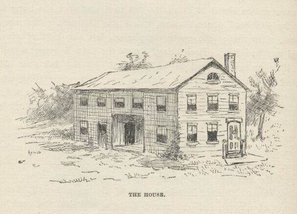
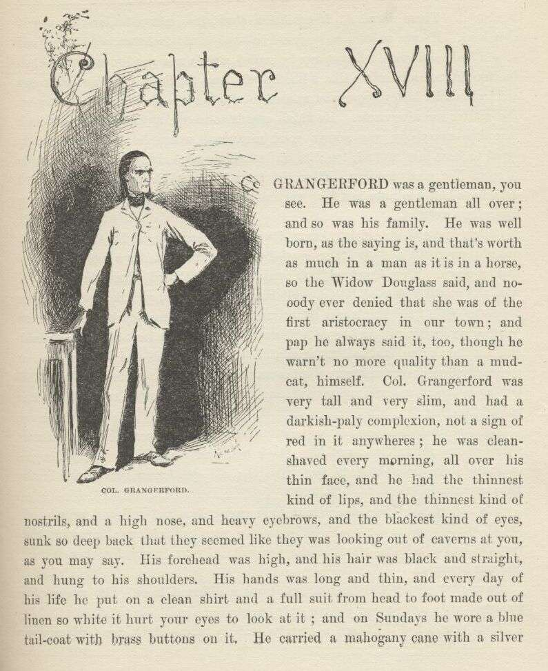
CHAPTER XVIII.
COL. Grangerford was a gentleman, you see. He was a gentleman all over; and so was
his family. He was well born, as the saying is, and that's worth as much in a man
as it is in a horse, so the Widow Douglas said, and nobody ever denied that she was
of the first aristocracy in our town; and pap he always said it, too, though he warn't
no more quality than a mudcat himself. Col. Grangerford was very tall and very slim,
and had a darkish-paly complexion, not a sign of red in it anywheres; he was clean
shaved every morning all over his thin face, and he had the thinnest kind of lips,
and the thinnest kind of nostrils, and a high nose, and heavy eyebrows, and the blackest
kind of eyes, sunk so deep back that they seemed like they was looking out of caverns
at you, as you may say. His forehead was high, and his hair was black and straight
and hung to his shoulders. His hands was long and thin, and every day of his life
he put on a clean shirt and a full suit from head to foot made out of linen so white
it hurt your eyes to look at it; and on Sundays he wore a blue tail-coat with brass
buttons on it. He carried a mahogany cane with a silver head to it. There warn't
no frivolishness about him, not a bit, and he warn't ever loud. He was as kind as
he could be—you could feel that, you know, and so you had confidence. Sometimes he
smiled, and it was good to see; but when he straightened himself up like a liberty-pole,
and the lightning begun to flicker out from under his eyebrows, you wanted to climb
a tree first, and find out what the matter was afterwards. He didn't ever have to
tell anybody to mind their manners—everybody was always good-mannered where he was.
Everybody loved to have him around, too; he was sunshine most always—I mean he made
it seem like good weather. When he turned into a cloudbank it was awful dark for
half a minute, and that was enough; there wouldn't nothing go wrong again for a week.
When him and the old lady come down in the morning all the family got up out of their
chairs and give them good-day, and didn't set down again till they had set down. Then
Tom and Bob went to the sideboard where the decanter was, and mixed a glass of bitters
and handed it to him, and he held it in his hand and waited till Tom's and Bob's was
mixed, and then they bowed and said, "Our duty to you, sir, and madam;" and they bowed the least bit in the world and said thank you, and so they drank, all three,
and Bob and Tom poured a spoonful of water on the sugar and the mite of whisky or
apple brandy in the bottom of their tumblers, and give it to me and Buck, and we drank
to the old people too.
Bob was the oldest and Tom next—tall, beautiful men with very broad shoulders and
brown faces, and long black hair and black eyes. They dressed in white linen from
head to foot, like the old gentleman, and wore broad Panama hats.
Then there was Miss Charlotte; she was twenty-five, and tall and proud and grand,
but as good as she could be when she warn't stirred up; but when she was she had a
look that would make you wilt in your tracks, like her father. She was beautiful.
So was her sister, Miss Sophia, but it was a different kind. She was gentle and sweet
like a dove, and she was only twenty.
Each person had their own nigger to wait on them—Buck too. My nigger had a monstrous
easy time, because I warn't used to having anybody do anything for me, but Buck's
was on the jump most of the time.
This was all there was of the family now, but there used to be more—three sons; they
got killed; and Emmeline that died.
The old gentleman owned a lot of farms and over a hundred niggers. Sometimes a stack
of people would come there, horseback, from ten or fifteen mile around, and stay five
or six days, and have such junketings round about and on the river, and dances and
picnics in the woods daytimes, and balls at the house nights. These people was mostly
kinfolks of the family. The men brought their guns with them. It was a handsome
lot of quality, I tell you.
There was another clan of aristocracy around there—five or six families—mostly of
the name of Shepherdson. They was as high-toned and well born and rich and grand
as the tribe of Grangerfords. The Shepherdsons and Grangerfords used the same steamboat
landing, which was about two mile above our house; so sometimes when I went up there
with a lot of our folks I used to see a lot of the Shepherdsons there on their fine
horses.
One day Buck and me was away out in the woods hunting, and heard a horse coming. We
was crossing the road. Buck says:
"Quick! Jump for the woods!"
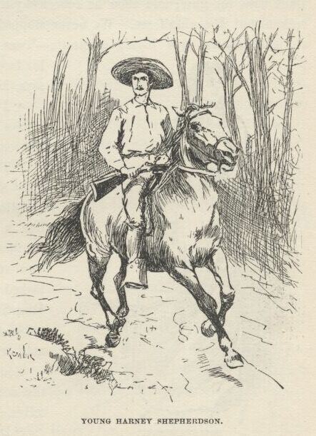
We done it, and then peeped down the woods through the leaves. Pretty soon a splendid
young man come galloping down the road, setting his horse easy and looking like a
soldier. He had his gun across his pommel. I had seen him before. It was young
Harney Shepherdson. I heard Buck's gun go off at my ear, and Harney's hat tumbled
off from his head. He grabbed his gun and rode straight to the place where we was
hid. But we didn't wait. We started through the woods on a run. The woods warn't
thick, so I looked over my shoulder to dodge the bullet, and twice I seen Harney cover
Buck with his gun; and then he rode away the way he come—to get his hat, I reckon,
but I couldn't see. We never stopped running till we got home. The old gentleman's
eyes blazed a minute—'twas pleasure, mainly, I judged—then his face sort of smoothed
down, and he says, kind of gentle:
"I don't like that shooting from behind a bush. Why didn't you step into the road,
my boy?"
"The Shepherdsons don't, father. They always take advantage."
Miss Charlotte she held her head up like a queen while Buck was telling his tale,
and her nostrils spread and her eyes snapped. The two young men looked dark, but
never said nothing. Miss Sophia she turned pale, but the color come back when she
found the man warn't hurt.
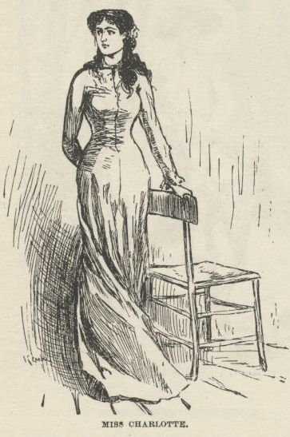
Soon as I could get Buck down by the corn-cribs under the trees by ourselves, I says:
"Did you want to kill him, Buck?"
"Well, I bet I did."
"What did he do to you?"
"Him? He never done nothing to me."
"Well, then, what did you want to kill him for?"
"Why, nothing—only it's on account of the feud."
"What's a feud?"
"Why, where was you raised? Don't you know what a feud is?"
"Never heard of it before—tell me about it."
"Well," says Buck, "a feud is this way: A man has a quarrel with another man, and
kills him; then that other man's brother kills him; then the other brothers, on both sides, goes for one another; then the cousins chip in—and by and by everybody's killed off, and there ain't no more feud. But
it's kind of slow, and takes a long time."
"Has this one been going on long, Buck?"
"Well, I should reckon! It started thirty year ago, or som'ers along there. There was trouble 'bout something,
and then a lawsuit to settle it; and the suit went agin one of the men, and so he
up and shot the man that won the suit—which he would naturally do, of course. Anybody
would."
"What was the trouble about, Buck?—land?"
"I reckon maybe—I don't know."
"Well, who done the shooting? Was it a Grangerford or a Shepherdson?"
"Laws, how do I know? It was so long ago."
"Don't anybody know?"
"Oh, yes, pa knows, I reckon, and some of the other old people; but they don't know
now what the row was about in the first place."
"Has there been many killed, Buck?"
"Yes; right smart chance of funerals. But they don't always kill. Pa's got a few
buckshot in him; but he don't mind it 'cuz he don't weigh much, anyway. Bob's been
carved up some with a bowie, and Tom's been hurt once or twice."
"Has anybody been killed this year, Buck?"
"Yes; we got one and they got one. 'Bout three months ago my cousin Bud, fourteen
year old, was riding through the woods on t'other side of the river, and didn't have
no weapon with him, which was blame' foolishness, and in a lonesome place he hears
a horse a-coming behind him, and sees old Baldy Shepherdson a-linkin' after him with
his gun in his hand and his white hair a-flying in the wind; and 'stead of jumping
off and taking to the brush, Bud 'lowed he could out-run him; so they had it, nip
and tuck, for five mile or more, the old man a-gaining all the time; so at last Bud
seen it warn't any use, so he stopped and faced around so as to have the bullet holes
in front, you know, and the old man he rode up and shot him down. But he didn't git
much chance to enjoy his luck, for inside of a week our folks laid him out."
"I reckon that old man was a coward, Buck."
"I reckon he warn't a coward. Not by a blame' sight. There ain't a coward amongst them Shepherdsons—not
a one. And there ain't no cowards amongst the Grangerfords either. Why, that old
man kep' up his end in a fight one day for half an hour against three Grangerfords,
and come out winner. They was all a-horseback; he lit off of his horse and got behind
a little woodpile, and kep' his horse before him to stop the bullets; but the Grangerfords
stayed on their horses and capered around the old man, and peppered away at him, and
he peppered away at them. Him and his horse both went home pretty leaky and crippled,
but the Grangerfords had to be fetched home—and one of 'em was dead, and another died the next day. No, sir; if a body's
out hunting for cowards he don't want to fool away any time amongst them Shepherdsons,
becuz they don't breed any of that kind."
Next Sunday we all went to church, about three mile, everybody a-horseback. The men
took their guns along, so did Buck, and kept them between their knees or stood them
handy against the wall. The Shepherdsons done the same. It was pretty ornery preaching—all
about brotherly love, and such-like tiresomeness; but everybody said it was a good
sermon, and they all talked it over going home, and had such a powerful lot to say
about faith and good works and free grace and preforeordestination, and I don't know
what all, that it did seem to me to be one of the roughest Sundays I had run across
yet.
About an hour after dinner everybody was dozing around, some in their chairs and some
in their rooms, and it got to be pretty dull. Buck and a dog was stretched out on
the grass in the sun sound asleep. I went up to our room, and judged I would take
a nap myself. I found that sweet Miss Sophia standing in her door, which was next
to ours, and she took me in her room and shut the door very soft, and asked me if
I liked her, and I said I did; and she asked me if I would do something for her and
not tell anybody, and I said I would. Then she said she'd forgot her Testament, and
left it in the seat at church between two other books, and would I slip out quiet
and go there and fetch it to her, and not say nothing to nobody. I said I would.
So I slid out and slipped off up the road, and there warn't anybody at the church,
except maybe a hog or two, for there warn't any lock on the door, and hogs likes a
puncheon floor in summer-time because it's cool. If you notice, most folks don't
go to church only when they've got to; but a hog is different.
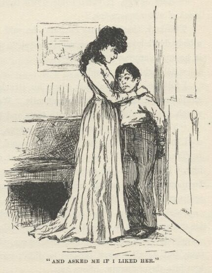
Says I to myself, something's up; it ain't natural for a girl to be in such a sweat
about a Testament. So I give it a shake, and out drops a little piece of paper with
"HALF-PAST TWO" wrote on it with a pencil. I ransacked it, but couldn't find anything
else. I couldn't make anything out of that, so I put the paper in the book again,
and when I got home and upstairs there was Miss Sophia in her door waiting for me.
She pulled me in and shut the door; then she looked in the Testament till she found
the paper, and as soon as she read it she looked glad; and before a body could think
she grabbed me and give me a squeeze, and said I was the best boy in the world, and
not to tell anybody. She was mighty red in the face for a minute, and her eyes lighted
up, and it made her powerful pretty. I was a good deal astonished, but when I got
my breath I asked her what the paper was about, and she asked me if I had read it,
and I said no, and she asked me if I could read writing, and I told her "no, only
coarse-hand," and then she said the paper warn't anything but a book-mark to keep
her place, and I might go and play now.
I went off down to the river, studying over this thing, and pretty soon I noticed
that my nigger was following along behind. When we was out of sight of the house
he looked back and around a second, and then comes a-running, and says:
"Mars Jawge, if you'll come down into de swamp I'll show you a whole stack o' water-moccasins."
Thinks I, that's mighty curious; he said that yesterday. He oughter know a body don't
love water-moccasins enough to go around hunting for them. What is he up to, anyway?
So I says:
"All right; trot ahead."
I followed a half a mile; then he struck out over the swamp, and waded ankle deep
as much as another half-mile. We come to a little flat piece of land which was dry
and very thick with trees and bushes and vines, and he says:
"You shove right in dah jist a few steps, Mars Jawge; dah's whah dey is. I's seed
'm befo'; I don't k'yer to see 'em no mo'."
Then he slopped right along and went away, and pretty soon the trees hid him. I poked
into the place a-ways and come to a little open patch as big as a bedroom all hung
around with vines, and found a man laying there asleep—and, by jings, it was my old
Jim!
I waked him up, and I reckoned it was going to be a grand surprise to him to see me
again, but it warn't. He nearly cried he was so glad, but he warn't surprised. Said
he swum along behind me that night, and heard me yell every time, but dasn't answer,
because he didn't want nobody to pick him up and take him into slavery again. Says he:
"I got hurt a little, en couldn't swim fas', so I wuz a considable ways behine you
towards de las'; when you landed I reck'ned I could ketch up wid you on de lan' 'dout
havin' to shout at you, but when I see dat house I begin to go slow. I 'uz off too
fur to hear what dey say to you—I wuz 'fraid o' de dogs; but when it 'uz all quiet
agin I knowed you's in de house, so I struck out for de woods to wait for day. Early
in de mawnin' some er de niggers come along, gwyne to de fields, en dey tuk me en
showed me dis place, whah de dogs can't track me on accounts o' de water, en dey brings
me truck to eat every night, en tells me how you's a-gitt'n along."
"Why didn't you tell my Jack to fetch me here sooner, Jim?"
"Well, 'twarn't no use to 'sturb you, Huck, tell we could do sumfn—but we's all right
now. I ben a-buyin' pots en pans en vittles, as I got a chanst, en a-patchin' up
de raf' nights when—"
"What raft, Jim?"
"Our ole raf'."
"You mean to say our old raft warn't smashed all to flinders?"
"No, she warn't. She was tore up a good deal—one en' of her was; but dey warn't no
great harm done, on'y our traps was mos' all los'. Ef we hadn' dive' so deep en swum
so fur under water, en de night hadn' ben so dark, en we warn't so sk'yerd, en ben
sich punkin-heads, as de sayin' is, we'd a seed de raf'. But it's jis' as well we
didn't, 'kase now she's all fixed up agin mos' as good as new, en we's got a new lot
o' stuff, in de place o' what 'uz los'."
"Why, how did you get hold of the raft again, Jim—did you catch her?"
"How I gwyne to ketch her en I out in de woods? No; some er de niggers foun' her
ketched on a snag along heah in de ben', en dey hid her in a crick 'mongst de willows,
en dey wuz so much jawin' 'bout which un 'um she b'long to de mos' dat I come to heah
'bout it pooty soon, so I ups en settles de trouble by tellin' 'um she don't b'long
to none uv um, but to you en me; en I ast 'm if dey gwyne to grab a young white genlman's
propaty, en git a hid'n for it? Den I gin 'm ten cents apiece, en dey 'uz mighty
well satisfied, en wisht some mo' raf's 'ud come along en make 'm rich agin. Dey's
mighty good to me, dese niggers is, en whatever I wants 'm to do fur me I doan' have
to ast 'm twice, honey. Dat Jack's a good nigger, en pooty smart."
"Yes, he is. He ain't ever told me you was here; told me to come, and he'd show me
a lot of water-moccasins. If anything happens he ain't mixed up in it. He can say he never seen us together, and it 'll be the truth."
I don't want to talk much about the next day. I reckon I'll cut it pretty short.
I waked up about dawn, and was a-going to turn over and go to sleep again when I
noticed how still it was—didn't seem to be anybody stirring. That warn't usual. Next
I noticed that Buck was up and gone. Well, I gets up, a-wondering, and goes down stairs—nobody
around; everything as still as a mouse. Just the same outside. Thinks I, what does
it mean? Down by the wood-pile I comes across my Jack, and says:
"What's it all about?"
Says he:
"Don't you know, Mars Jawge?"
"No," says I, "I don't."
"Well, den, Miss Sophia's run off! 'deed she has. She run off in de night some time—nobody
don't know jis' when; run off to get married to dat young Harney Shepherdson, you
know—leastways, so dey 'spec. De fambly foun' it out 'bout half an hour ago—maybe
a little mo'—en' I tell you dey warn't no time los'. Sich another hurryin' up guns en hosses you never see! De women folks has gone for to stir up de relations, en ole Mars Saul
en de boys tuck dey guns en rode up de river road for to try to ketch dat young man
en kill him 'fo' he kin git acrost de river wid Miss Sophia. I reck'n dey's gwyne
to be mighty rough times."
"Buck went off 'thout waking me up."
"Well, I reck'n he did! Dey warn't gwyne to mix you up in it. Mars Buck he loaded up his gun en 'lowed
he's gwyne to fetch home a Shepherdson or bust. Well, dey'll be plenty un 'm dah,
I reck'n, en you bet you he'll fetch one ef he gits a chanst."
I took up the river road as hard as I could put. By and by I begin to hear guns a
good ways off. When I come in sight of the log store and the woodpile where the steamboats
lands I worked along under the trees and brush till I got to a good place, and then
I clumb up into the forks of a cottonwood that was out of reach, and watched. There
was a wood-rank four foot high a little ways in front of the tree, and first I was
going to hide behind that; but maybe it was luckier I didn't.
There was four or five men cavorting around on their horses in the open place before
the log store, cussing and yelling, and trying to get at a couple of young chaps that
was behind the wood-rank alongside of the steamboat landing; but they couldn't come
it. Every time one of them showed himself on the river side of the woodpile he got
shot at. The two boys was squatting back to back behind the pile, so they could watch
both ways.